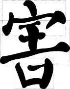
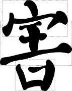

Characters composed of a single radical 独体字
The right balance and stability in characters is very important to their appearance. Different character structures include characters composed of a single radical 独体字, with left and right parts 左右, with top and bottom parts 上下, semi-enclosed 半包围, and completely enclosed 全包围. Several characters composed of a single radical are shown below.
In the shao 少 character the two dots are facing each other and inclined so that the whole character is not flat. The qi 七 character is intentionally very compact. In general, more complex characters are drawn large while very simple characters, like this one, are drawn smaller.
Characters composed of a left part and a right part are shown belowIn the ling 陵 character the left part is narrow while the right is wide. The opposite is true of the guo 郭 character. The illustrations below show examples of characters that are divided into top and bottom parts.


Strokes and individual parts of the character are adjusted to have an irregular but pleasing symmetry. Examples of characters with a top-middle-bottom structure are shown below.
 

Characters showing a top-middle-bottom structure are invariably taller than they are wide. The top, the middle, or the bottom part may be larger in accordance with the complexity of the radical and the requirements of the individual character. The middle part of the character will often be compressed. Examples of two characters with a left-middle-right structure are shown below.

Characters with a left-middle-right structure tend to be wider than tall. The proportion of width allowed for each part depends its the complexity in relation to the other parts. Examples of two characters with a semi-enclosed structure are shown below.


Upper semi-enclosing radicals like 户、广、厂 the enclosed parts should partially protrude. Otherwise, the enclosed parts will be too cramped. For the enclosing radical 辶 the tail should extend past the upper enclosed part. Examples of two characters with a fully enclosed structure are shown below.


See the book Yan Zhen Qing: Yan Qin Ceremony Inscription [Zhan Weixin 2007] for more details on the character structure